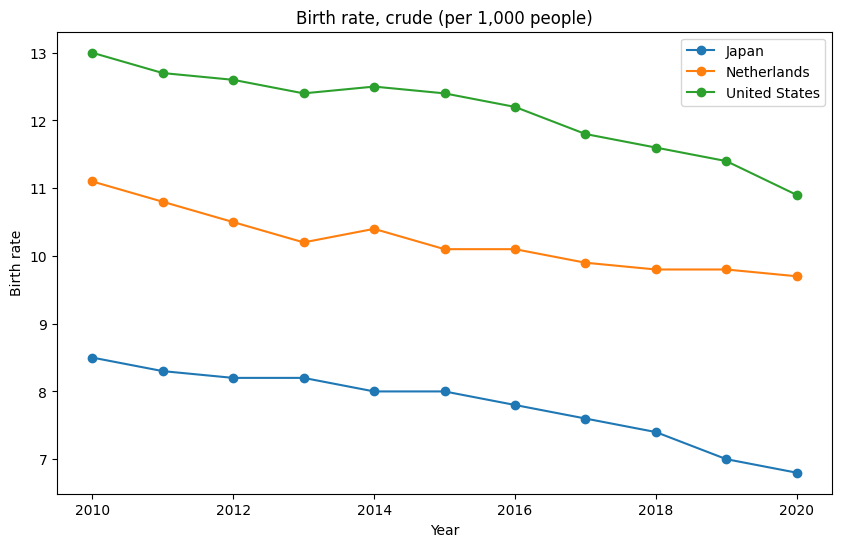
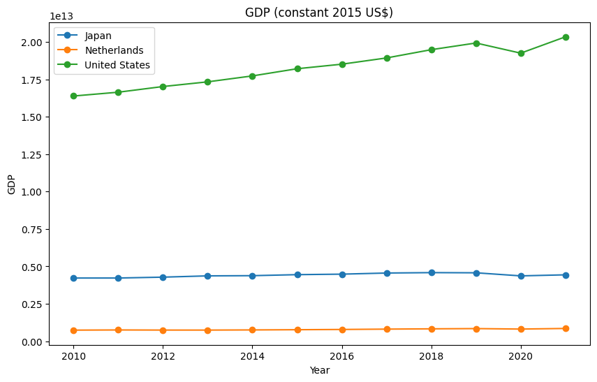

Test Visualization#
# Import packages
import pandas as pd
import plotly.express as px
import seaborn as sns
import matplotlib.pyplot as plt
Load data#
Import the WDI dataset
# import specified years from dataset
cols_to_use = ['Country Name', 'Country Code', 'Indicator Name', 'Indicator Code'] + [str(i) for i in range(2010, 2022)]
df = pd.read_csv('WDIData.csv', sep=',', usecols=cols_to_use)
df
---------------------------------------------------------------------------
FileNotFoundError Traceback (most recent call last)
Cell In[2], line 3
1 # import specified years from dataset
2 cols_to_use = ['Country Name', 'Country Code', 'Indicator Name', 'Indicator Code'] + [str(i) for i in range(2010, 2022)]
----> 3 df = pd.read_csv('WDIData.csv', sep=',', usecols=cols_to_use)
4 df
File ~/miniconda3/envs/jupyterbook/lib/python3.11/site-packages/pandas/io/parsers/readers.py:912, in read_csv(filepath_or_buffer, sep, delimiter, header, names, index_col, usecols, dtype, engine, converters, true_values, false_values, skipinitialspace, skiprows, skipfooter, nrows, na_values, keep_default_na, na_filter, verbose, skip_blank_lines, parse_dates, infer_datetime_format, keep_date_col, date_parser, date_format, dayfirst, cache_dates, iterator, chunksize, compression, thousands, decimal, lineterminator, quotechar, quoting, doublequote, escapechar, comment, encoding, encoding_errors, dialect, on_bad_lines, delim_whitespace, low_memory, memory_map, float_precision, storage_options, dtype_backend)
899 kwds_defaults = _refine_defaults_read(
900 dialect,
901 delimiter,
(...)
908 dtype_backend=dtype_backend,
909 )
910 kwds.update(kwds_defaults)
--> 912 return _read(filepath_or_buffer, kwds)
File ~/miniconda3/envs/jupyterbook/lib/python3.11/site-packages/pandas/io/parsers/readers.py:577, in _read(filepath_or_buffer, kwds)
574 _validate_names(kwds.get("names", None))
576 # Create the parser.
--> 577 parser = TextFileReader(filepath_or_buffer, **kwds)
579 if chunksize or iterator:
580 return parser
File ~/miniconda3/envs/jupyterbook/lib/python3.11/site-packages/pandas/io/parsers/readers.py:1407, in TextFileReader.__init__(self, f, engine, **kwds)
1404 self.options["has_index_names"] = kwds["has_index_names"]
1406 self.handles: IOHandles | None = None
-> 1407 self._engine = self._make_engine(f, self.engine)
File ~/miniconda3/envs/jupyterbook/lib/python3.11/site-packages/pandas/io/parsers/readers.py:1661, in TextFileReader._make_engine(self, f, engine)
1659 if "b" not in mode:
1660 mode += "b"
-> 1661 self.handles = get_handle(
1662 f,
1663 mode,
1664 encoding=self.options.get("encoding", None),
1665 compression=self.options.get("compression", None),
1666 memory_map=self.options.get("memory_map", False),
1667 is_text=is_text,
1668 errors=self.options.get("encoding_errors", "strict"),
1669 storage_options=self.options.get("storage_options", None),
1670 )
1671 assert self.handles is not None
1672 f = self.handles.handle
File ~/miniconda3/envs/jupyterbook/lib/python3.11/site-packages/pandas/io/common.py:859, in get_handle(path_or_buf, mode, encoding, compression, memory_map, is_text, errors, storage_options)
854 elif isinstance(handle, str):
855 # Check whether the filename is to be opened in binary mode.
856 # Binary mode does not support 'encoding' and 'newline'.
857 if ioargs.encoding and "b" not in ioargs.mode:
858 # Encoding
--> 859 handle = open(
860 handle,
861 ioargs.mode,
862 encoding=ioargs.encoding,
863 errors=errors,
864 newline="",
865 )
866 else:
867 # Binary mode
868 handle = open(handle, ioargs.mode)
FileNotFoundError: [Errno 2] No such file or directory: 'WDIData.csv'
# # focus on these countries
# df = df[df['Country Code'].isin(['NLD', 'USA', 'JPN'])]
# df
# Melt columns
melt_columns = ['Country Name', 'Country Code', 'Indicator Name', 'Indicator Code']
df = df.melt(id_vars=melt_columns, var_name='Year', value_name='Value')
# Remove missing values
df = df.dropna()
# Convert 'Year' column to numeric
df['Year'] = pd.to_numeric(df['Year'])
df
| Country Name | Country Code | Indicator Name | Indicator Code | Year | Value | |
|---|---|---|---|---|---|---|
| 0 | Africa Eastern and Southern | AFE | Access to clean fuels and technologies for coo... | EG.CFT.ACCS.ZS | 2010 | 1.562598e+01 |
| 1 | Africa Eastern and Southern | AFE | Access to clean fuels and technologies for coo... | EG.CFT.ACCS.RU.ZS | 2010 | 5.808091e+00 |
| 2 | Africa Eastern and Southern | AFE | Access to clean fuels and technologies for coo... | EG.CFT.ACCS.UR.ZS | 2010 | 3.701570e+01 |
| 3 | Africa Eastern and Southern | AFE | Access to electricity (% of population) | EG.ELC.ACCS.ZS | 2010 | 2.755714e+01 |
| 4 | Africa Eastern and Southern | AFE | Access to electricity, rural (% of rural popul... | EG.ELC.ACCS.RU.ZS | 2010 | 1.457717e+01 |
| ... | ... | ... | ... | ... | ... | ... |
| 4602828 | Zimbabwe | ZWE | Unemployment, youth total (% of total labor fo... | SL.UEM.1524.ZS | 2021 | 7.325000e+00 |
| 4602834 | Zimbabwe | ZWE | Urban population | SP.URB.TOTL | 2021 | 4.875224e+06 |
| 4602835 | Zimbabwe | ZWE | Urban population (% of total population) | SP.URB.TOTL.IN.ZS | 2021 | 3.230300e+01 |
| 4602836 | Zimbabwe | ZWE | Urban population growth (annual %) | SP.URB.GROW | 2021 | 1.719628e+00 |
| 4602851 | Zimbabwe | ZWE | Women Business and the Law Index Score (scale ... | SG.LAW.INDX | 2021 | 8.687500e+01 |
2325435 rows × 6 columns
Plot data#
Testing plot
df_birth_rate = df[df["Indicator Name"] == "Birth rate, crude (per 1,000 people)"]
df_birth_rate = df_birth_rate[df_birth_rate['Country Code'].isin(['NLD', 'USA', 'JPN'])]
# Line plot for birth rates
plt.figure(figsize=(10, 6))
for country in df_birth_rate['Country Name'].unique():
country_data = df_birth_rate[df_birth_rate['Country Name'] == country]
plt.plot(country_data['Year'], country_data['Value'], marker='o', label=country)
plt.title('Birth rate, crude (per 1,000 people)')
plt.ylabel('Birth rate')
plt.xlabel('Year')
plt.legend()
plt.show()

df_gdp = df[df["Indicator Name"] == "GDP (constant 2015 US$)"]
df_gdp = df_gdp[df_gdp['Country Code'].isin(['NLD', 'USA', 'JPN'])]
# Line plot for GDP
plt.figure(figsize=(10, 6))
for country in df_gdp['Country Name'].unique():
country_data = df_gdp[df_gdp['Country Name'] == country]
plt.plot(country_data['Year'], country_data['Value'], marker='o', label=country)
plt.title('GDP (constant 2015 US$)')
plt.ylabel('GDP')
plt.xlabel('Year')
plt.legend()
plt.show()
